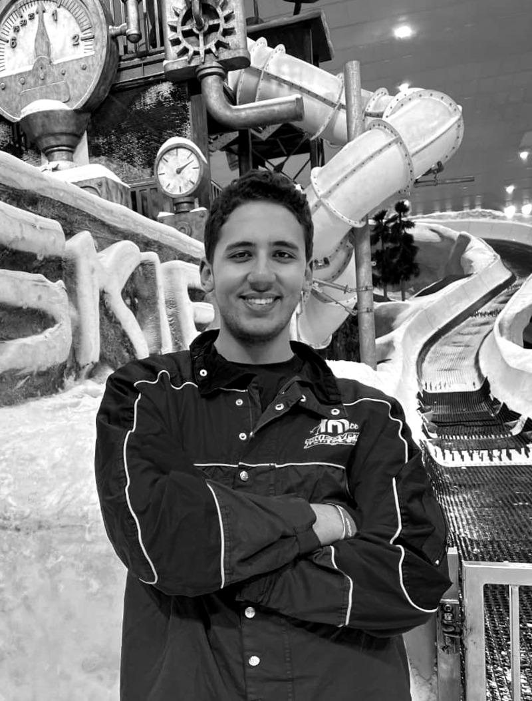

About me
Medical student driven by curiosity and a genuine openness to diverse clinical paths.
I am committed to inclusive, patient-centered care and health equity, and I am drawn to the parts of healthcare that meet human rights, dignity and personal autonomy. I am seeking observerships and training that let me learn from many specialties. [Add two honest lines about yourself here.]

The quick facts
MBBCh, New Mansoura University, Faculty of Medicine
September 2022
Level 5
Observerships and clinical training
ESC Council on Cardiovascular Genomics; ESMO application submitted
Arabic, mother tongue · English, proficient · Deutsch, basics
Side projects
Communication and self-development projects from my university courses.
The Victim Personality in the workplaceA self-development project, part of a university course. [One line on what you explored.]
Dealing with difficult patientsA scenario role play, part of the same self-development course. [One line on what you practiced.]
E-logbook and full portfolio available on request.